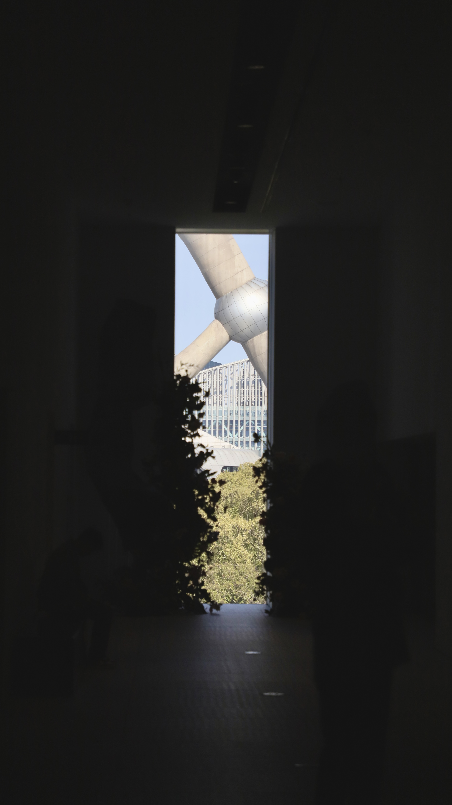

寒假随记
照片在朋友圈叫 "在长江以南"。 本来想这个寒假能去去日本什么的，结果一月第二天日本地震，第三天日本飞机出事了，家里想等暑假环球影城开幕（？）；借此蜗居在张家港、常熟、南京、上海四地。回西安时与上海吃shakeshack，朋友说乡下人来上海吃沪餐就要发个朋友圈，加个Location；故名之曰 "在长江以南"。
南京
南京德基广场扶梯。随着楼层的递减，扶梯越靠向外侧，极具层次感。Shot on iPhone.

老门东。除主要街道上灯会的繁华景象，小巷里有挺多好像是学网红店布置的小角落。虽见的很多，但在无人的小巷中有些碰撞的意味。Shot on iPhone.


即使是个平常的周内，总统府人依旧很多。奇怪的是全集中在蒋委员长办公室里，排队5分钟才可凑近去拍一张全景。特别有意思的是那边有很多小猫在各处。大礼堂里没有很多人，唯有一只猫从逸仙博士画像下走过（无政治隐喻）。
常熟
兄弟俩。哥哥（椅子上）很乖，在椅子上从来不敢跳下来。弟弟（我家的）一点都不乖，喜欢乱叫，然后他一叫哥哥就会和他吵架。两只狗从来没好过；只是突然有一刻他们俩似心有灵犀地看向同一个地方，如同创新港的cr和ys。Shot on iPhone.（一看这糟糕的锐化和噪点就看出来了）
田间无云的月亮和天空。在独特的光影下，月之暗面（非严格意义上的）清晰可见。表妹说这个叫达芬奇辉光。Shot on iPhone.（苹果反向广告x2，照片又大又难看）
上海
本打算2月17日（年初八）回西安，先去坐高铁去上海，然后从上海坐飞机。结果到了高铁站才发现，买的是2月18号的高铁票。18、初八傻傻分不清楚。
又恰逢春运开始上班，所有的往上海的火车票均售罄。无奈下，开车去，还好时间多。
浦东美术馆 Museum of Art Pudong, MAP
去年的初八也在上海，第一次去的这里。不同于上海当代艺术馆Power Factory of Art (PFA)，去的时候仅剩一个展览；浦东美术馆几乎每次都会给我带来惊喜。（不过去年暑假的那里发现也没新的东西了，似乎暑假的时候运气太差了）。
曾梵志《我》。从模糊逐渐到清晰的面庞，有力而重复的笔触、粗旷的纹理似乎透露出一种坚毅或者无奈。

曾梵志《无题》。这幅画在曾梵志《过往与此刻》展览的入口，刚出现时这样的布展就给我带来的十足的震撼。介绍说，这是2023年末曾梵志在浦东美术馆现场作画而成，地上铺满了作画所用的笔，线条的灵动超脱出画布的界限，十分有趣。

曾梵志《向日葵》。在没有那么抽象的画作之后，曾梵志逐渐研究起构成画作的线条本身。此处呈现出梵高《向日葵》的模样。
此刻很让我想起在深圳当代艺术与城市规划冠中我看到的丁乙《十示星系》。丁乙钻研数十年的作画，全部围绕着一个符号：十字。特别有意思的是一个房间中，全是用十字构成的电风扇在头顶旋转着。虽然属实看不懂单纯的线条、十字的含义，但看到这样的布展都总会有一种恍然大悟的感觉。
（p.s. 淘宝上看到一个丁乙《十示星系》联名桌子。四十万还是四百万。。）
浦东美术馆那时还有巴洛克绘画与卡拉瓦乔作品以及苏格兰超现实主义作品，不过相较于The MET之类的就会比较逊色（大概也可能是我没有欣赏高雅艺术的潜力）。包括常驻于此的徐冰《引力剧场》、去年的装置艺术等，很多中国的本土艺术家的个展在这片土地更加熠熠生辉。
上海
虽说现代主义建筑林立的浦东上，同样是现代主义的浦东美术馆显得十分普通；但归根于AJN事务所的精心设计，黄浦江边的大幅开放空间、以及独特的采光使得此处成为东方明珠塔以及浦西的最佳观景点。

随着楼层的增高，东方明珠塔的全貌逐渐映入眼帘。似乎是现代主义的外表里，藏着一颗苏式园林一步一景（？）的内核。
从浦东看浦西。刚去上海的时候喜欢从浦西看浦东高楼大厦的繁华；而后喜欢从浦东看想浦西的历史与变迁。
上海的最高楼曾经是正对着的海关大楼，然后是国际饭店，后来是那座头顶着金莲花的叫不出名字的大楼；再然后是这后面的世贸大厦，最后才有了浦东的三件套。曾经很不理解中国为什么会造那么多奇形怪状一点都不好看的大楼，而钟爱于纽约和芝加哥现代主义与装饰艺术的交相辉映。而后才知道在那个快速发展的年代，开放、反叛、自由和蕴涵着这些精神的后现代主义塑造了这座城市开放包容的精神。
纽约30年代的Art Deco和繁荣至今的现代主义，和这里的19世纪新古典和改革开放带来的后现代主义刚好错开。何不是一种巧合。
修图时才发现的海（？）鸥。
虹桥机场
只好在上海停留3个小时，故看完展直接去了虹桥，又是刚好在登机时候才到登机口。由于春运，东航把A359 (B-32A8) 拿来飞虹桥 - 西安航线。买票时刚好看到有这个，便毫不犹豫买了。东航从上海飞的飞机餐属实不错。
刚好是摆渡车。
云。Shot on iPhone拍的机尾摄像机。
可能是因为国内航线的缘故（？），机上娱乐里没有游戏，看了两个小时机尾摄像机。
光。
（完。明日开学。）